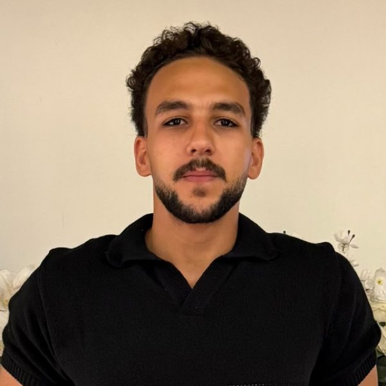

Open to AI Full-Stack Engineer roles · New Cairo, Egypt
I build AI agents, RAG systems and the full-stack products around them.
AI Full-Stack Engineer and PSPO I certified Product Owner. I ship multi-agent systems, MCP servers, retrieval pipelines and local, sovereign AI, then wrap them in production web and mobile apps that teams in Egypt, the UAE and Saudi Arabia actually use, in Arabic and English.
$ whoami --stack
agents: LangGraph · LangChain · multi-agent orchestration · tool calling · HITL approvals
rag: embeddings · hybrid FTS5 + vector + graph (RRF) · cited answers · evals
tools: MCP servers · Claude Code skills & subagents · DeepSeek Harness plugins
ship: Next.js · TypeScript · Node · Python/FastAPI · Postgres · SwiftUI · Kotlin
lang: "ar", "en" # RTL-first, Arabic voice
agents: LangGraph · LangChain · multi-agent orchestration · tool calling · HITL approvals
rag: embeddings · hybrid FTS5 + vector + graph (RRF) · cited answers · evals
tools: MCP servers · Claude Code skills & subagents · DeepSeek Harness plugins
ship: Next.js · TypeScript · Node · Python/FastAPI · Postgres · SwiftUI · Kotlin
lang: "ar", "en" # RTL-first, Arabic voice

PSPO IScrum.org certified
10 reposagents · RAG · apps
Capabilities
What I build, with proof
Every capability below links to a public repository you can open, read and run.
Projects
Shipped work
Open any project for the problem, architecture, AI techniques, tech stack and screenshots.
Experience
Engineer who owns the outcome
I own products end to end: from the metric and the backlog to the code, the release and the numbers after it.
Product + Engineering
Why the mix matters
AI products fail on the wrong problem more often than on the wrong model. I handle both.
How I deliver AI features
Certifications & education
Contact
Let's build sovereign, Arabic-first AI.
Hiring an AI Full-Stack Engineer who can also own the product? I reply within a day.